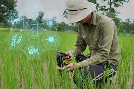
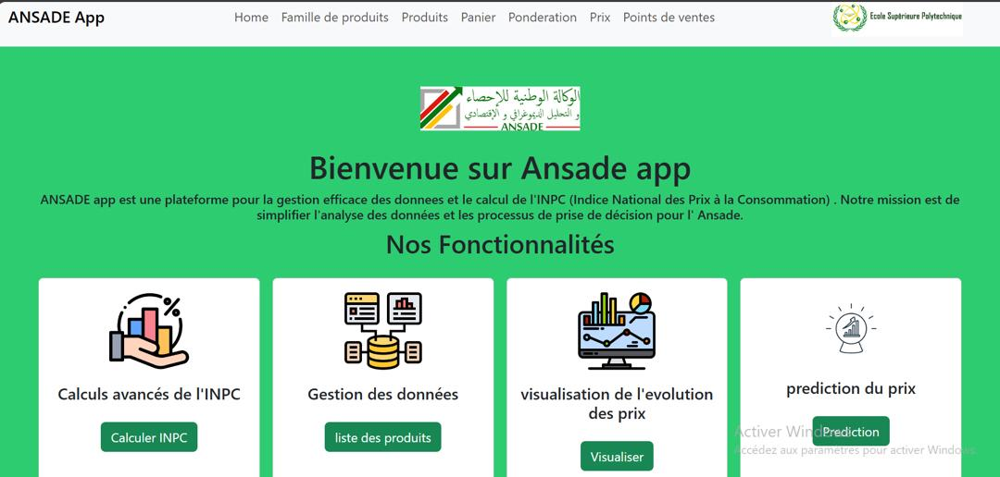
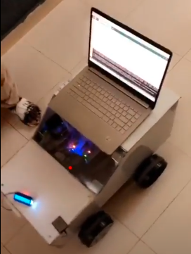

Projets Académiques
🔍 Assistant IA pour agriculture – RAG, Python
Développement d’un assistant intelligent basé sur le système RAG (Retrieval-Augmented Generation) pour répondre à des questions sur l’agriculture en Mauritanie. Outils : Python, Google Colab, BeautifulSoup.
📊 Plateforme Django pour INPC (Indice Prix)
Création d’un site web pour le calcul et la visualisation de l’indice national des prix à la consommation (INPC). Outils : Django, Docker, Pandas, Matplotlib.
🚜 Véhicule connecté – Arduino + capteurs
Réalisation d’un véhicule autonome pour la collecte de données agricoles via capteurs (pH, humidité, température). Données transmises à un site web pour traitement IA. Outils : Arduino, Flutter, Django.
📚 Data Challenge – Éducation & Analyse Multisource
Projet de modélisation sur l’impact des conditions de travail et des ressources pédagogiques sur la qualité de l’enseignement primaire en Mauritanie. Outils : Python, Pandas, Pyreadstat, Clustering K-means, PCA.
📄 Rapport PDF
📘 Notebook Jupyter

🎶 Projet Culturel – automatiser de la Musique Mauritanienne
Ce projet utilise un modèle de Deep Learning de type LSTM pour analyser et détecter les fréquences musicales propres aux Maqâmât (modes musicaux traditionnels). L’objectif est de préserver, classifier et promouvoir le patrimoine musical mauritanien à travers l’analyse automatique de sons enregistrés.
Expériences professionnelles
Projet industriel entreprise (PIE) – ESP Nouakchott
Stage en alternance (Octobre 2024 - Décembre 2024)
Développement d’une plateforme Django pour l’analyse de données géologiques (forage), avec intégration de visualisations interactives (cartes, graphiques).
📎 Ressource : Voir le rapport PIE
Société Nationale Industrielle et Minière (SNIM)
Stage de découverte (Juillet 2024 - Octobre 2024)
Participation active à l’ensemble des processus d’achat, de gestion des commandes, et de suivi des fournisseurs dans le département d’approvisionnement de la SNIM, en contribuant à l’amélioration des procédures logistiques et administratives.
📎 Ressource : Voir le rapport de stage
Certifications et Attestations
- Data Cleaning and Preprocessing with Pandas (365 DataScience), 2024 — Credential ID:
CC-CB8E01EC9 - Machine Learning in Python (365 DataScience), 2024 — Credential ID:
CC-D1E7BA9C60 - Git and GitHub (Data Science 360), 2024 — Credential ID:
CC.AF5D9536C6 - SQL (Data Science 360), 2024 — Credential ID:
CC.32B6F6722B - Introduction to Jupyter (365 DataScience), 2024 — Credential ID:
CC-43BFC83649 - DELF B2, 2024
- Core English Language Test B1+ (Tracktest CEFR), 2024 — Credential ID:
503259C